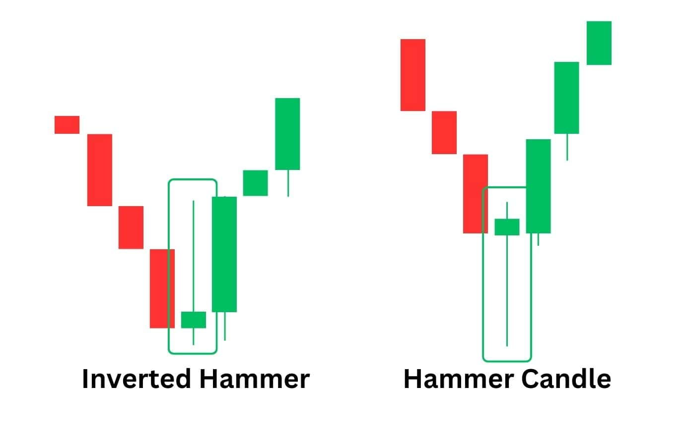
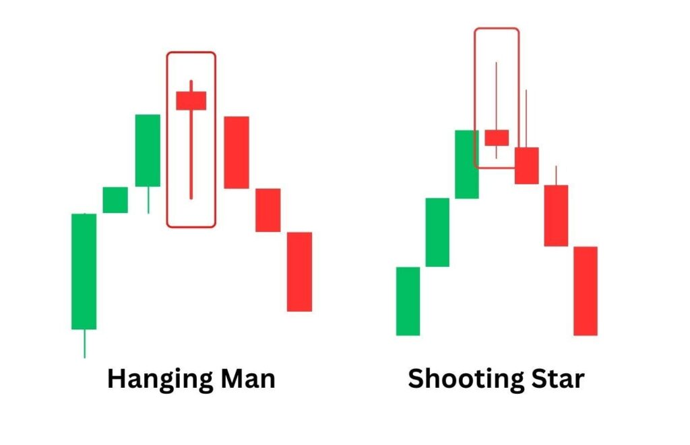
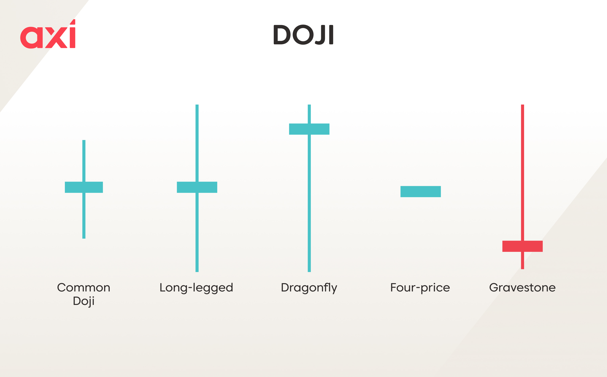
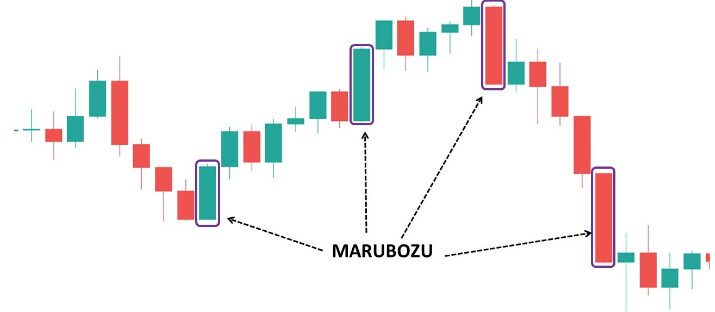

Основни единични свещи в трейдинга (японски свещи)
Единичните свещни модели са основата на анализа с японски свещи. Те се състоят от само една свещ,
но могат да дадат важна информация за настроението на пазара – дали купувачите (биковете)
или продавачите (мечките) имат контрол.
Какво показва една свещ?
Всяка свещ съдържа четири основни елемента:
- Отваряне (Open)
- Затваряне (Close)
- Най-висока цена (High)
- Най-ниска цена (Low)
Тялото показва разликата между отваряне и затваряне, а сенките (фитилите)
показват екстремните стойности.
Основни единични свещни модели
1. Чук (Hammer)
Чукът е свещ с малко тяло и дълга долна сянка. Горната сянка е много малка или липсва.
- Появява се след низходящ тренд
- Показва, че продавачите са натиснали цената надолу, но купувачите са я върнали нагоре
- Сигнал за възможен обрат нагоре
2. Обърнат чук (Inverted Hammer)
Обърнатият чук има малко тяло и дълга горна сянка.
- Появява се след спад
- Показва опит на купувачите да вдигнат цената
- Възможен сигнал за обръщане нагоре

3. Висящ човек (Hanging Man)
Този модел изглежда като чук, но се появява след възходящ тренд.
- Дълга долна сянка и малко тяло
- Показва, че продавачите започват да оказват натиск
- Възможен сигнал за обръщане надолу
4. Стреляща звезда (Shooting Star)
Свещ с малко тяло и дълга горна сянка, почти без долна сянка.
- Появява се след възходящ тренд
- Показва, че купувачите са загубили контрол
- Силен сигнал за възможен спад

5. Дожи (Doji)
Дожи е свещ, при която цената на отваряне и затваряне са почти еднакви.
- Показва нерешителност на пазара
- Няма ясен контрол от страна на купувачи или продавачи
- Често сигнализира за възможен обрат или пауза в тренда
Видове дожи
- Long-legged Doji: Дълги сенки – висока волатилност и несигурност
- Dragonfly Doji: Дълга долна сянка – потенциален бичи сигнал
- Four-Price Doji: Без сенки – отваряне, затваряне, най-висока и най-ниска цена са еднакви, показва изключителна липса на движение и ликвидност
- Gravestone Doji: Дълга горна сянка – потенциален мечи сигнал

6. Марубозу (Marubozu)
Марубозу е свещ без сенки или с много малки сенки.
- Зелена марубозу: силен контрол на купувачите
- Червена марубозу: силен контрол на продавачите
- Показва силен импулс в посоката на движението

Как да използваш тези модели?
Единичните свещи не трябва да се използват самостоятелно. За по-добри резултати ги комбинирай с:
- Подкрепа и съпротива
- Тренд линия
- Обем
- Индикатори (RSI, MACD и др.)
Контекстът е най-важен – една и съща свещ може да има различно значение в различни ситуации.